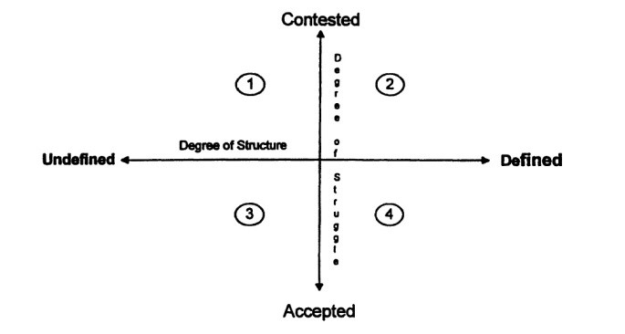

|
|
برابری در بین فعالین جنبشهای اجتماعی / زینب پیغمبرزاده
پنج شنبه25 مهر 1392
یکی از مهمترین دستاوردهای کمپین یک میلیون امضا ترویج ایده فعالیت جمعی بدون سلسلهمراتب و نقد روابط قدرت درونگروهی بود. این ایده بهخصوص بعد از آغاز بهکار مدرسه فمینیستی و انتشار نقدهایی نسبت به آن در سایت کمپین، بیشازپیش مطرح شد. ترجمه و انتشار مقاله «استبداد ساختار نداشتن» نوشته جو فریمن که بر اساس تجربه او از مشارکت در جنبش زنان آمریکا نوشته شده است، گام مهمی برای معرفی این بحثها به خواننده فارسیزبان بود. این مقاله هنوز در بحث های فعالین اجتماعی و دانشگاههای انگلیسی زبان، مطرح است. در اینجا سعی دارم به برخی از جنبههای نابرابری در داخل جنبش های اجتماعی اشاره کنم. این بحثها ممکن است کمی کلاسیک به نظر بیایند اما همچنان میتوانند در فهم آنچه که در کمپین و دیگر گروههای فعالیت اجتماعی در ایران اتفاق افتاده است و نیز برنامهریزی برای آینده راهگشا باشند.
سازمانهای بوروکراتیک
در ابتدای قرن بیستم جامعهشناسانی مانند ماکس وبر (۱۹۲۲-۱۹۷۸) و روبرت مایکلز (۱۹۱۱-۱۹۵۹) معتقد بودند که جوامع مدرن به سمت عقلانی شدن پیش میروند. مایکلز معتقد بود که جنبش های اجتماعی برای رقابت در عرصه سیاسی ناگزیر به روابط بوروکراتیک و رهبری کاریزماتیک نیازمند هستند. وبر برای فهم و تفسیر جهان اجتماعی مفهوم «نمونه ایده آل» را پیشنهاد میکند. تعریفی از پدیدههای اجتماعی که در جهان خارجی وجود ندارد، اما محقق آن را بهعنوان ابزاری برای تعریف و دستهبندی پدیدهها میسازد. بر این اساس وبر نمونه ایده آل سازمانهای مدرن را با سه ویژگی اصلی تصویر میکشد: تقسیمکار، سلسلهمراتب اقتدار و قوانین و دستورالعمل های رسمی.
جنبش های اجتماعی جدید
در دهه ۱۹۶۰ بسیاری از جامعهشناسان مدعی شدند که جنبش های اجتماعی جدیدی به وجود آمدهاند که با جنبش های کلاسیک پیش از آن متفاوتاند. یکی از مهمترین این تفاوتها مخالفت این جنبش های جدید با سلسلهمراتب و رهبری متمرکز است (Pichardo, ۱۹۹۷). بهعنوان نمونه، بر طبق تفسیر سمبولیک ملوچی (۱۹۸۸) جنبش های اجتماعی نمادهایی هستند که نظم مسلط را به چالش میکشند؛ بنابراین در جنبش های اجتماعی جدید ساختار فقط ابزار نیست بلکه خودش هدف است. این جنبشها میخواهند نشان دهند که جهان دیگری ممکن است، میخواهند مدل های جدید رفتاری و الگوهای جدید سازمانی خلق کنند. از دهه ۱۹۶۰ به بعد تحت تأثیر جنبش های جدید چپ، نقد سلسلهمراتب در میان برخی از فمینیست های غربی نیز رایج شد. آنها بوروکراسی را بهعنوان یک ایده مردانه رد کردند (Hatch & Cunliffe, 2006: 133).
ساختار جنبشی جایگزین
راچفیلد-ویت تاکید میکند که ارزش مرکزی سازمانهای جمعگرا برابری است و در نتیجه اعضای آنها تلاش دارند که همه جنبههای کار جمعیشان را بر اساس نفی سلسلهمراتب سازماندهی کنند. راچفیلد-ویت معتقد است درحالیکه بوروکراسی حول عقلانیت رسمی شکل گرفته است، دموکراسی جمعگرا بر منطق عقلانیت حقیقی (substantive) استوار است (۱۹۷۹: ۵۲۵).
او بر اساس تحقیقاتی که درباره پنج سازمان جمعگرا در آمریکا انجام داده است، نمونه ایده آل سازمانهای بدون سلسلهمراتب را در نقطه مقابل سازمانهای بوروکراتیک وبر ترسیم میکند:
۱- اقتدار از افراد مثلاً کارکنان دفتری و کارشناسان یا دموکراسی، نمایندگی و نظر اکثریت ناشی نمیشود، بلکه ناشی از تصمیمگیری اقناعی است که به همه اعضا حق مشارکت کامل و برابر میدهد.
۲- قوانین حداقلی هستند و در هر موردی بهصورت جمعی تعریف میشوند، گروه میتواند بر اساس ارزش های حقیقی تصمیمات جدیدی اتخاذ کند.
۳- کنترل اجتماعی بر اساس اصول شخصی و اخلاقی است و از آنجایی که در گروههای یکدست تر افراد ارزش های مشترک بیشتری دارند، این گروهها تمایل دارند که اصول مشخصی برای انتخاب اعضایشان داشته باشند.
۴- روابط اجتماعی، کلی گرایانه، شخصی و به خودی
خود ارزشمند و بر اساس ایده آل های جمعاند.
۵- برای بهدست آوردن یک موقعیت، دوستی، ارزش های اجتماعی- سیاسی، خصوصیات شخصیتی و دانش و مهارت های غیررسمی مورد توجه قرار میگیرد. مزیت های شغلی و سلسلهمراتب بر اساس موقعیتها مورد پذیرش نیستند.
۶- دوستی و اخلاق بیش از درآمد اهمیت دارند. افراد آن را به دلیل علاقه انجام میدهند و بر محصول و پروسه کار نظارت کامل دارند.
۷- در زمینه قشربندی اجتماعی از آنجایی که این گروهها برابری خواهاند، تلاش میشود که تفاوت در تواناییها به تفاوت در درآمد و موقعیت منجر نشوند.
۸- تقسیمکار حداقلی است، همه مدیریت میکنند و همه کار میکنند. مسئولیتها چرخشی است (همان، ۵۱۱-۵۱۷).
راچفیلد ویت (۱۹۷۹(نشان میدهد که این سازمانها با موانع جدی ای هم روبر هستند:
۱- زمان: جلسات زمان بر هستند و هیچ پاسخ روشنی برای پرسشهایی از این دست که " چه موضوعاتی به جلسات عمومی نیاز داند؟" و چه زمانی بعضی از افراد میتوانند بهجای دیگران تصمیم بگیرند؟" وجود ندارد.
۲- یکدستی: تصمیمگیری اقناعی نیازمند یکدستی اساسی است. وقتی گروه ناهمخوان است و همه اعضا ارزش های یکسانی ندارند، پروسه تصمیمگیری اقناعی ممکن است اتلاف وقت به نظر برسد و برخی از اعضا ترجیح دهند که با یک مدیر کار کنند.
۳- ضربههای عاطفی: روابط دوستی غیررسمی در سازمانهای جمعی ممکن است رضایتبخش باشد اما درعینحال میتواند به اعضا فشار عاطفی وارد کند. در بحث های رو در رو نقد ایدهها به آسانی ممکن است نقد شخصی تصور شود. حلقههای دوستی ممکن است به انحصار اطلاعات منجر شود.
۴- شخصیت های غیر دموکراتیک: فرهنگ مسلط سلسلهمراتبی جامعه از ما افرادی میسازد که برای کار در چارچوب های جمعگرا آماده نیستند.
۵- موانع محیطی: موانع محیطی، همانند بقیه سازمانها، سازمانهای جمعگرا ممکن است با موانع قانونی، اقتصادی، سیاسی و فرهنگی مواجه شوند.
۶- تفاوت های فردی: تفاوت های افراد در تواناییها و شخصیتها، میتواند یک مانع در راه برابری باشد اما همان طور که پیشازاین توضیح داده شد، سازمانهای جمعگرا تلاش میکنند که این تفاوتها را از طریق آموزش و توانمندسازی افراد به حداقل برسانند.
راچفیلد-ویت (۱۹۷۶(معتقد است که سازمانهای جمعگرا هم مانند سازمانهای بوروکراتیک بهپیش شرطهایی نیاز دارند و نمیتوانند تحت هر شرایطی به فعالیتشان ادامه دهند. از نظر او پیش شرطها شامل موارد زیر است:
۱- جهتگیری گذرا: بقای سازمانی نباید بر پیگیری مطالبات اصلی جنبش مقدم باشد.
۲- خدمات و ارزش های مخالف: اهداف و ارزش های آنان بهصورت کیفی متفاوت و حتی مخالف نهادها و ارزش های فرهنگی موجود است.
۳- اساس حرفهای حمایتی: مشارکت حرفهایها مستقیم و غیرمستقیم مفید است.
۴- جهتگیری جنبشی: هر چه یک سازمان جمعگرا بیشتر خودش را با یک جنبش اجتماعی وسیع هویت یابی کند و به سمت آن حرکت کند، کمتر امکان دارد که ارزشهایش جایگزین شوند، بهخصوص در انتخاب اهداف. اعضا ممکن است بین سازمانهای غیردولتی و نهادهای حرفهای مختلف جا به جا شوند. راچفیلد-ویت حرکت بین جنبش های مختلف را از زاویه دید "جنبش داخل جنبش" میبیند و معتقد است که شرکتکنندگان در جنبههای مختلف یک کشمش شرکت میکنند.
۵- تکنولوژی و توزیع دانش: زمانی که کارها پیچیده و حرفهای هستند، دستیابی به برابری بین اعضا آسان نیست. اگرچه آموزش اعضا، آسانسازی و گردشی کردن کارها میتواند کمک کند.
۶- انتقاد متقابل و انتقاد از خود: عادیسازی انتقاد مانع از انحصارگرایی میشود.
۷- محدودیت اندازه و الگوهای رشد جایگزین: تعداد افراد ممکن برای دموکراسی مستقیم ممکن است بر اساس سطح تکنولوژی و دانش متفاوت باشد. در برخی از موارد گروهی از اعضا، سازمان جدیدی را بهمنظور جلوگیری از رشد تعداد افراد گروه اولیه ایجاد میکنند.
۸- به حاشیه راندهشدگی اقتصادی: درحالیکه داوطلبین یا کارکنان با حقوق پایین، ممکن است بعد از مدتی سازمان را ترک کنند، حقوق بالا ممکن است کارکنانی را جذب کند که واقعاً به اهداف سازمان اعتقاد ندارند.
۹- وابستگی به منبع حمایتی: وابستگی به منابع داخلی مثل اعضا و مراجعین میتواند دموکراسی داخلی را افزایش دهد، درحالیکه منابع مالی خارجی میتواند حساسیت به علایق اعضا را کاهش دهد.
آیا برابری در داخل جنبشهای اجتماعی ضروری است؟
اگر چنانچه فریمن تاکید میکند نابرابری حتی در گروههای بی ساختار نیز وجود دارد، آیا این برابری داخلی ضروری است؟ منسبریج (۱۹۷۷) معتقد است که با توجه به تفاوت های افراد این نابرابری طبیعی است. مطالعه او درباره یک سازمان غیردولتی مداخله در بحران، مطالعه نشان میدهد که اگر گروههای برابری خواه یکدست باشند و اعتماد بین اعضا وجود داشته باشد، اعضای کم قدرت تر میتوانند بپذیرند که قدرتمندان از این قدرت برای اهداف جمعی استفاده میکنند. اما گلیزر (۱۹۹۶) معتقد است از آنجایی که برابری ارزش مرکزی جنبش های اجتماعی برابری خواه است نمیتواند به سادگی نادیده گرفته شود. او استدلال میکند که نابرابری در گروههای بی ساختار با نابرابری در گروههای سلسلهمراتبی متفاوت است به دلیل اینکه اگرچه در گروههای سلسلهمراتبی، ساختار غیررسمی در جهت مخالف ساختار رسمی کار میکند، اما هنوز در تضاد با ایده آل ساختار سلسلهمراتبی نیست. درحالیکه در گروه برابری خواه ساختار غیررسمی در تضاد با ایده آل برابری است و در نتیجه مشکلدار دیده میشود. او دو گروه برابری خواه آمریکایی را مورد بررسی قرار میدهد: یک گروه تئاتر و گروهی که برای صلح و عدالت فعالیت میکند. به هر دو گروه به تازگی اعضای جدیدی به آنها اضافه شدهاند. مطالعه او نشان میدهد که در گروههای اجتماعی برابری خواه دو جنبه مختلف قدرت میتواند وجود داشته باشد: میزان ساختار یافتگی روابط قدرت و میزانی که گروه این قدرت را به چالش میکشد. بر این اساس چهار دینامیک مختلف قدرت میتواند در گروههای اجتماعی برابری خواه وجود داشته باشد:

۱- ساختار تعریف نشده به چالش کشیده شده: در روند توسعه گروه، پایهگذاران ممکن است خودشان را داخل گروه و تازه واردین را خارج از گروه محسوب کنند. آنها ممکن است تصور کنند که این نابرابری طبیعی است که البته ممکن است برای اعضا جدید قابل پذیرش نباشد. ممکن است برای هر دو این گروهها بیان احساساتشان دشوار باشد.
۲- ساختار تعریف شده به چالش کشیده شده: در این مرحله روابط قدرت بهصورت عمومی تری مورد بحث قرار گرفتهاند و مورد اطلاع هستند اما ممکن است مورد پذیرش همه نباشند.
۳- ساختار تعریف شده پذیرفته شده: نقش های متفاوت نابرابری محسوب نمیشوند و بیشتر اعضا داوطلبینی را که بهصورت موقتی انتخاب میشوند، میپذیرند.
۴- ساختار تعریف نشده پذیرفته شده: همانند مورد اول، این مورد نیز میتواند در پروسه ایجاد گروهها وجود داشته باشد که مقاومت کمی در برابر نابرابری صورت گیرد. این میتواند مورد پذیرش قرار گیرد که افرادی که علاقه، تجربه و تعهد بیشتری دارند، حق بیشتری برای تصمیمگیری داشته باشند.
فریمن در مقاله استبداد ساختار نداشتن استدلال میکند از آنجایی که در گروههای بدون ساختار اعضا از روابط قدرت بیاطلاع هستند، امکان نقد کمتری دارند، اما گلیزر در این مطالعه نشان میدهد که حتی وقتی روابط قدرت تعریف نشده اعضا بهخصوص اعضای کم قدرت تر از آن مطلع هستند و میتوانند آن را بپذیرند یا آن را به چالش بکشند. او معتقد است که مهم نیست ساختار گروه بهصورت رسمی تعریف شده باشد یا بهصورت غیررسمی بلکه مهم آن است که در یک فرآیند جمعی انعطافپذیر تعریف شده باشد و بتواند از نو بازتعریف شود.
منابع:
Glaser, Hollis F. (1996) Structure and Struggle in Egalitarian Groups: Dimensions of Power Relations. Small Group Research. vol. 27.
Hatch, Mary Jo &Cunliffe, Ann L (2006). Organizational Theory. Oxford: Oxford University Press
Mansbridge, Jane J. (1977). Acceptable Inequalities, British Journal of Political Science, Vol. 7, No. 3, pp. 321-336.
Melucci, Alberto (1985). The Symbolic Challenge of Contemporary Movements. Social Research, Vol. 52 (4), p789-816.
Melucci, Alberto (1988). Social Movements and the Democratization of Everyday Life. In J.Keane (Ed.), Civil Society and the State, London: Verso.
Michaels, Robert. ([I911] 1959). Political Parties. New York: Dover.
Rothschild-Whitt, Joyce. (1976). Conditions Facilitating Participatory-Democratic Organizations. Sociological Inquiry. Vol. 46 (2): 75-86.
Rothschild-Whitt, Joyce. (1979). The collectivist organization: an alternative to rational-bureaucratic models. American Sociological Review. Vol. 44: 509-527.
Rothschild-Whitt, Joyce. (1982). The collectivist organization: an alternative to bureaucratic models. In F. Lindenfeld and J. Rothschild-Whitt (Eds.) Workplace democracy and social change (pp. 109–124). Boston: PorterSargent.
Weber, Max ([I922]1978). Economy and Society. 2 vols, Berkeley: University of California Press.